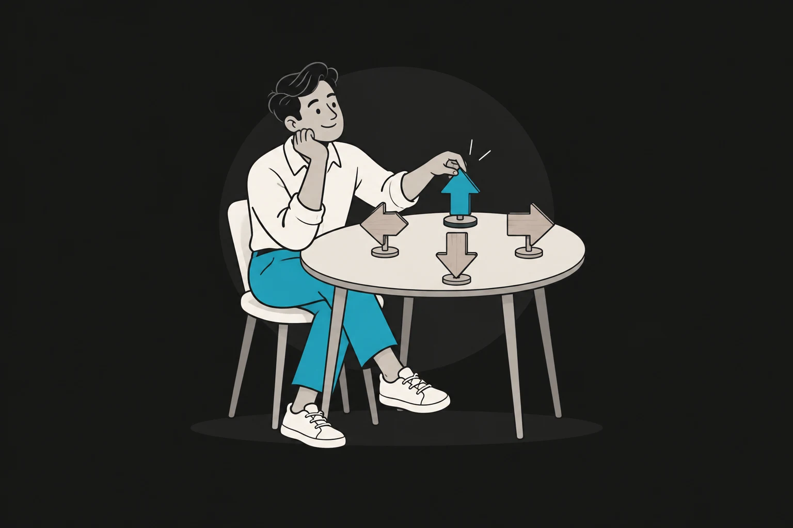
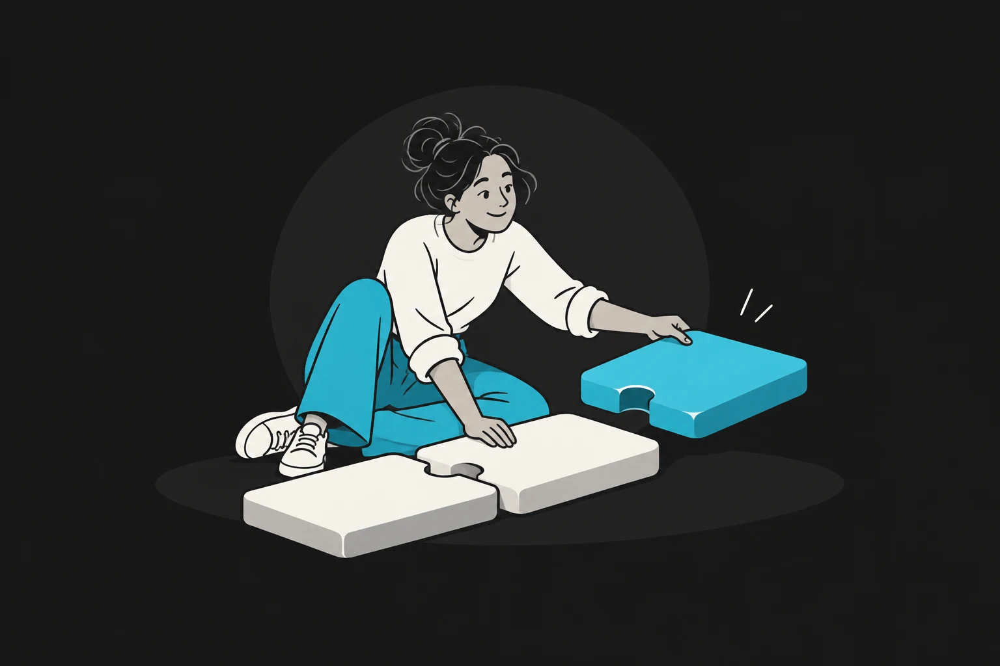
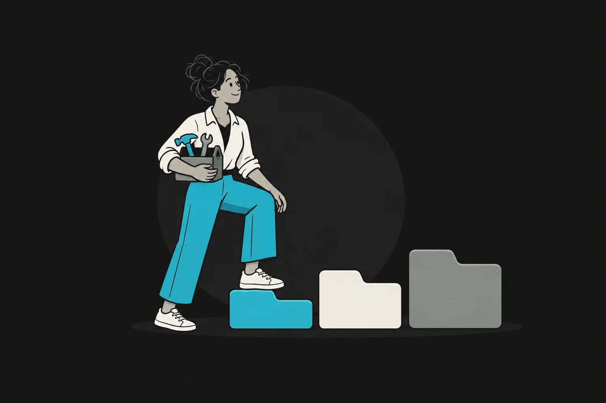
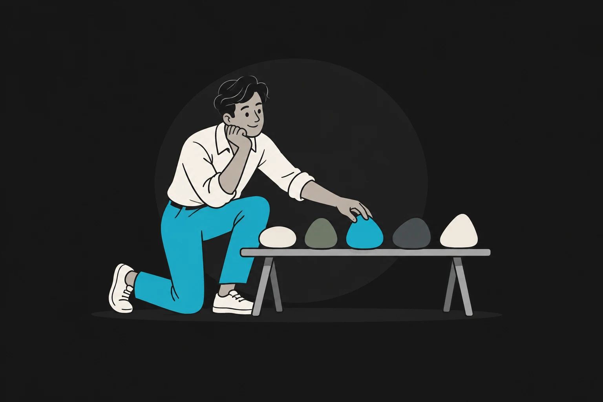
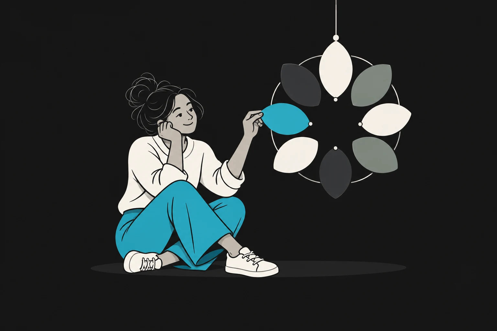
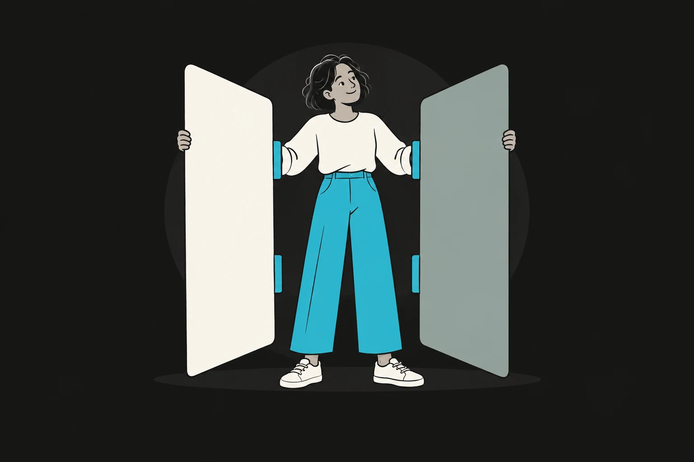

Comece por aqui
Perfil DISC
Entenda por que seu jeito de avançar aproxima algumas pessoas — e cria atrito com outras.
Fazer assessment
Aprofundamento humano
Assessments para perceber como você tende a agir, aprender, decidir e se relacionar. Eles oferecem mapas para reflexão, não rótulos definitivos.
Começar pelo DISCBiblioteca de assessments
Seis caminhos para observar seus padrões. Escolha uma pergunta que faça sentido para o seu momento e leve a reflexão para a prática.
6 assessments disponíveis

Comece por aqui
Entenda por que seu jeito de avançar aproxima algumas pessoas — e cria atrito com outras.
Fazer assessment
Assessment 02
Descubra por que tanto conteúdo nem sempre vira aprendizado que muda sua prática.
Fazer assessment
Assessment 03
Veja onde você trava entre pesquisar, organizar, experimentar e finalmente colocar de pé.
Fazer assessment
Assessment 04
Troque a cobrança de “ser melhor em tudo” por um mapa mais justo dos seus padrões.
Fazer assessment
Assessment 05
Perceba a necessidade por trás de padrões que se repetem, mesmo quando você promete mudar.
Fazer assessment
Assessment 06
Entenda, pelas preferências popularizadas pelo MBTI, por que seu jeito de pensar pode parecer estranho para outra pessoa.
Fazer assessmentAssessment 01
Você pode ser competente e ainda sair de uma conversa com a sensação de que foi intenso demais, vago demais, cuidadoso demais ou difícil de acompanhar.
Este mapa ajuda a separar intenção de impacto. Você reconhece seu ritmo natural, antecipa atritos e encontra palavras melhores para pedir o que precisa — sem tentar virar outra pessoa.
Use como ponto de partida. O resultado descreve tendências de resposta e pode mudar conforme contexto, papel e momento. Não é diagnóstico psicológico.
Perfil comportamental · Rodada 1 de 3
Questão 01 de 10
Seu mapa DISC
Isso parece com você? Compare a leitura com situações reais. O valor está na conversa que o mapa provoca, não em defender uma letra.
Leve seu resultado e orientações de colaboração para o seu agente pessoal.
Como esta área funciona
Um resultado não explica sozinho quem você é nem prevê tudo o que fará.
Mostramos distribuições e nuances, não apenas uma categoria vencedora.
As respostas ficam no navegador. Nada é enviado ou associado à sua conta.